KBinsDiscretizer#
About KBinsDiscretizer#
KBinsDiscretizer adalah alat preprocessing dalam data mining yang mengubah fitur numerik kontinu menjadi interval diskrit (bin).
Teknik ini termasuk dalam feature engineering dan sangat berguna untuk menangani hubungan non-linear dalam data.
1. Basic Concepts#
Tujuan: Mengonversi nilai kontinu (misal: usia, harga) menjadi kategori diskrit (misal: usia[0-20], [21-40], [41-60]).
Analog: Seperti mengelompokkan nilai ujian menjadi kategori A, B, C.
Manfaat:
Menangkap hubungan non-linear antara fitur dan target.
Mengurangi dampak outliers (data ekstrem).
Memenuhi asumsi model berbasis kategori (seperti Naive Bayes atau Decision Tree).
2. Main Parameters#
Key parameter saat menggunakan KBinsDiscretizer (implementasi Scikit-Learn):
Parameter |
Nilai/Opsi |
Deskripsi |
|---|---|---|
|
Integer (default=5) |
Jumlah bin yang diinginkan per fitur. |
|
|
Metode encoding hasil diskritisasi (mirip |
|
|
Strategi penentuan batas bin. |
3. Bin Determination Strategy#
Strategi menentukan bagaimana batas interval dihitung:
'uniform'(Equal Width):Membagi rentang nilai menjadi bin berlebar sama.
Cocok untuk data distribusi merata.
Contoh: Rentang 0–100 dengan
n_bins=5→ Bin: [0-20], [20-40], …, [80-100].
'quantile'(Equal Frequency):Setiap bin berisi jumlah data yang sama (±).
Cocok untuk data skewed atau outlier.
Contoh: 100 data,
n_bins=5→ Setiap bin berisi ~20 data.
'kmeans'(Clustering-based):Gunakan algoritma K-Means untuk mengelompokkan nilai.
Batas bin ditentukan oleh pusat kluster.
Cocok untuk pola distribusi kompleks.
4. Encoding Method#
Setelah diskritisasi, hasil perlu di-encode untuk model ML:
'ordinal':Hasil: Integer (0, 1, 2, …) yang mewakili bin.
Contoh: Nilai 15 → Bin 0, Nilai 25 → Bin 1.
'onehot':Hasil: Matriks sparse one-hot (misal: [0, 1, 0] untuk Bin 1).
'onehot-dense':Versi dense dari one-hot (bentuk array penuh).
5. Usage Procedure#
from sklearn.preprocessing import KBinsDiscretizer
# Inisialisasi
discretizer = KBinsDiscretizer(
n_bins=3,
encode='ordinal',
strategy='kmeans'
)
# Fitting & transform
X_binned = discretizer.fit_transform(X)
6. Applications & Best Practices#
Use Case:
Meningkatkan performa model linear (seperti Logistic Regression) dengan menambahkan non-linearitas.
Reduksi noise pada data sensor.
Peringatan:
n_binsterlalu besar → Overfitting.n_binsterlalu kecil → Kehilangan informasi.
Tips:
Gunakan
strategy='quantile'untuk data tidak seimbang.Validasi dengan cross-validation untuk memilih
n_binsoptimal.Kombinasikan dengan
Pipelineuntuk menghindari data leakage.
Assignment To-Do#
Menjelaskan proses Discretization menggunakan K-Means Clustering pada data iris, dan lakukan dengan model Naive Bayes dan Decision Tree on data that has been Discretized and before Discretization.
1. Data Preparation#
Pastikan pembagian data random untuk menghindari bias.
Pilih dataset Iris (4 fitur numerik:
sepal_length,sepal_width,petal_length,petal_width; target: spesies bunga).Bagi data menjadi training set & testing set (contoh: 70% training, 30% testing).
2. Discretization with K-Means#
Inisialisasi KBinsDiscretizer:
Parameter:
strategy='kmeans'(gunakan K-Means untuk menentukan bin).n_bins(misal 3-5 bin per fitur, eksperimen nanti).encode='ordinal'(hasil: angka integer mewakili bin).
Fitting:
Hitung pusat kluster (centroid) untuk setiap fitur menggunakan algoritma K-Means pada training set.
Contoh: Fitur
petal_length→ centroid bin 1 = 1.5 cm, bin 2 = 4.0 cm, bin 3 = 5.5 cm.
Transform:
Kategorikan nilai kontinu ke bin berdasarkan jarak terdekat ke centroid.
Contoh:
petal_length= 4.2 cm → masuk bin 2 (karena lebih dekat ke 4.0 cm).Bin tidak sama lebar, tetapi mengikuti pola alami data.
Hasil akhir: Setiap fitur numerik menjadi variabel kategorikal ordinal (contoh:
petal_length→ [0, 1, 2]).
3. Modeling Before Discretization#
Baseline performa tanpa proses discretization
Naive Bayes (GaussianNB):
Asumsi: Data kontinu berdistribusi normal.
Latih model pada data asli (4 fitur numerik).
Evaluasi akurasi di testing set.
Decision Tree:
Latih model pada data asli (split node berdasarkan nilai kontinu).
Evaluasi akurasi di testing set.
4. Modeling After Discretization#
Model Naive Bayes harus diubah dari GaussianNB ke CategoricalNB karena tipe data berubah!
Naive Bayes (CategoricalNB):
Ubah tipe model: Gunakan CategoricalNB (dirancang untuk fitur diskret/kategorikal).
Latih model pada data hasil discretization.
Evaluasi akurasi di testing set.
Decision Tree:
Latih model yang sama pada data diskret.
Splitting criterion (misal: Gini/Entropy) bekerja pada frekuensi kategori.
Evaluasi akurasi di testing set.
5. Evaluation & Comparison#
Hitung metrik performa:
Akurasi, Precision, Recall (fokus pada akurasi untuk simplifikasi).
Bandingkan hasil:
Naive Bayes: Before vs. After discretization.
Decision Tree: Before vs. After discretization.
Analisis:
Apakah discretization meningkatkan akurasi?
Model mana yang paling diuntungkan?
Mengapa bisa terjadi (lihat karakteristik model)?
Naive Bayes:
Before: Asumsi normal mungkin tidak terpenuhi.
After: Data diskret lebih sesuai dengan multinomial distribution.
Decision Tree:
Before: Split pada nilai kontinu (misal:
petal_length < 2.45).After: Split berdasarkan kategori bin (misal:
petal_length_bin == 1).
Data Mining Process (CRISP-DM)#
1. Business Understanding#
Tujuan Utama:
Mengevaluasi pengaruh diskritisasi berbasis K-Means terhadap performa model klasifikasi (Naive Bayes & Decision Tree).
Menentukan apakah transformasi data diskrit meningkatkan akurasi prediksi spesies bunga iris.
Kriteria Kesuksesan:
Akurasi model setelah diskritisasi > akurasi model baseline (data kontinu).
1.1 Define the Problem#
“Bagaimana pengaruh teknik diskritisasi berbasis K-Means terhadap akurasi klasifikasi spesies bunga Iris menggunakan model Naive Bayes dan Decision Tree?”
1.2 Objectives#
Mengevaluasi dampak diskritisasi fitur numerik terhadap performa model.
Membandingkan akurasi model pada data kontinu vs. diskret.
Menentukan apakah diskritisasi K-Means cocok untuk dataset Iris.
1.3 Stakeholders & Needs#
Stakeholder |
Ekspektasi |
|---|---|
Data Scientist |
Memahami kondisi dimana diskritisasi meningkatkan performa model. |
Dosen |
Validasi pemahaman konsep preprocessing dan pemodelan. |
Peneliti Botani |
Metode akurat untuk identifikasi spesies berbasis fitur morfologi. |
1.4 Success Criteria#
Technical:
Akurasi model setelah diskritisasi meningkat ≥ 3% dibanding baseline (data kontinu).
Business:
Rekomendasi praktis: “Gunakan diskritisasi jika pakai Naive Bayes, pertahankan data kontinu untuk Decision Tree”.
2. Data Understanding#
Aktivitas:
Eksplorasi dataset Iris:
Jumlah fitur (4 numerik: sepal/petal length/width).
Jumlah kelas target (3 spesies: setosa, versicolor, virginica).
Distribusi data (statistik deskriptif, deteksi outlier).
Visualisasi:
Scatter plot antar-fiturnya.
Histogram distribusi tiap fitur.
Tools:
Pandas profiling, Matplotlib/Seaborn.
import pandas as pd
import numpy as np
import matplotlib.pyplot as plt
import seaborn as sns
import warnings
warnings.filterwarnings('ignore')
pd.set_option('display.max_columns', None)
sns.set_style('whitegrid')
plt.rcParams['figure.dpi'] = 100
A. Data Collection#
Memuat data dari kedua sumber (MySQL dan PostgreSQL)
Mengecek struktur dasar: dimensi data dan sampel awal
CRISP-DM Compliance: Memvalidasi sumber data dan format
df_mysql = pd.read_csv("data/iris_mysql.csv")
df_postgre = pd.read_csv("data/iris-postgre.csv")
print("MySQL Dataset:")
display(df_mysql.head())
df_mysql.info()
MySQL Dataset:
| id | Class | petal length | petal width | |
|---|---|---|---|---|
| 0 | 1 | Iris-setosa | 1.4 | 0.2 |
| 1 | 2 | Iris-setosa | 1.4 | 0.2 |
| 2 | 3 | Iris-setosa | 1.3 | 0.2 |
| 3 | 4 | Iris-setosa | 1.5 | 0.2 |
| 4 | 5 | Iris-setosa | 1.4 | 0.2 |
<class 'pandas.core.frame.DataFrame'>
RangeIndex: 150 entries, 0 to 149
Data columns (total 4 columns):
# Column Non-Null Count Dtype
--- ------ -------------- -----
0 id 150 non-null int64
1 Class 150 non-null object
2 petal length 150 non-null float64
3 petal width 150 non-null float64
dtypes: float64(2), int64(1), object(1)
memory usage: 4.8+ KB
print("PostgreSQL Dataset:")
display(df_postgre.head())
df_postgre.info()
PostgreSQL Dataset:
| id | Class | sepal length | sepal width | |
|---|---|---|---|---|
| 0 | 1 | Iris-setosa | 5.1 | 3.5 |
| 1 | 2 | Iris-setosa | 4.9 | 3.0 |
| 2 | 3 | Iris-setosa | 4.7 | 3.2 |
| 3 | 4 | Iris-setosa | 4.6 | 3.1 |
| 4 | 5 | Iris-setosa | 5.0 | 3.6 |
<class 'pandas.core.frame.DataFrame'>
RangeIndex: 150 entries, 0 to 149
Data columns (total 4 columns):
# Column Non-Null Count Dtype
--- ------ -------------- -----
0 id 150 non-null int64
1 Class 150 non-null object
2 sepal length 150 non-null float64
3 sepal width 150 non-null float64
dtypes: float64(2), int64(1), object(1)
memory usage: 4.8+ KB
B. Data Description#
Statistik deskriptif lengkap: mean, std, min/max, IQR
CRISP-DM Compliance: Menggunakan
describe()untuk summary statistik
def descriptive_analysis(df, name, max_cat_display=10):
"""
Menampilkan statistik deskriptif lengkap untuk kolom numerik dan kategorikal
Parameters:
df (pd.DataFrame): DataFrame yang akan dianalisis
name (str): Nama dataset untuk header output
max_cat_display (int): Maksimum kategori yang ditampilkan per kolom kategorikal
"""
# Header untuk output
display(Markdown(f"##### Statistik Deskriptif: {name} ({len(df)} baris)"))
# 1. Analisis Kolom Numerik
num_cols = df.select_dtypes(include=np.number).columns
if len(num_cols) > 0:
# Hitung statistik tambahan
num_stats = df[num_cols].describe().T.assign(
IQR = lambda x: x['75%'] - x['25%'],
CV = lambda x: np.where(x['mean'] != 0, x['std'] / x['mean'], np.nan)
)
# Highlight kolom dengan CV tinggi (>0.5) dan missing values
cv_highlight = num_stats['CV'] > 0.5
display(num_stats.style
.background_gradient(cmap='Blues', subset=['mean', 'std', '50%'])
.applymap(lambda _: 'background-color: #ffff', subset=pd.IndexSlice[cv_highlight, ['CV']])
.set_caption(f"Statistik Numerik ({len(num_cols)} fitur)"))
else:
display(Markdown("ℹ️ Tidak ditemukan kolom numerik"))
# 2. Analisis Kolom Kategorikal
cat_cols = df.select_dtypes(include='object').columns
if len(cat_cols) > 0:
display(Markdown(f"\n##### Distribusi Kategorikal ({len(cat_cols)} fitur)"))
for col in cat_cols:
# Hitung distribusi dan proporsi
counts = df[col].value_counts(dropna=False)
proportions = counts / len(df)
cat_df = pd.DataFrame({
'Count': counts,
'Proportion': proportions
}).head(max_cat_display)
# Tampilkan dengan styling
display(cat_df.style
.bar(subset=['Count'], color='#0000', vmin=0)
.format({'Proportion': '{:.2%}'})
.set_caption(f"Variabel: {col} (Unique: {df[col].nunique()})"))
else:
display(Markdown("ℹ️ Tidak ditemukan kolom kategorikal"))
descriptive_analysis(df_mysql, "MySQL Dataset")
---------------------------------------------------------------------------
NameError Traceback (most recent call last)
Cell In[5], line 1
----> 1 descriptive_analysis(df_mysql, "MySQL Dataset")
Cell In[4], line 11, in descriptive_analysis(df, name, max_cat_display)
2 """
3 Menampilkan statistik deskriptif lengkap untuk kolom numerik dan kategorikal
4
(...)
8 max_cat_display (int): Maksimum kategori yang ditampilkan per kolom kategorikal
9 """
10 # Header untuk output
---> 11 display(Markdown(f"##### Statistik Deskriptif: {name} ({len(df)} baris)"))
13 # 1. Analisis Kolom Numerik
14 num_cols = df.select_dtypes(include=np.number).columns
NameError: name 'Markdown' is not defined
descriptive_analysis(df_postgre, "PostgreSQL Dataset", max_cat_display=5)
Statistik Deskriptif: PostgreSQL Dataset (150 baris)
| count | mean | std | min | 25% | 50% | 75% | max | IQR | CV | |
|---|---|---|---|---|---|---|---|---|---|---|
| id | 150.000000 | 75.500000 | 43.445368 | 1.000000 | 38.250000 | 75.500000 | 112.750000 | 150.000000 | 74.500000 | 0.575435 |
| sepal length | 150.000000 | 5.843333 | 0.828066 | 4.300000 | 5.100000 | 5.800000 | 6.400000 | 7.900000 | 1.300000 | 0.141711 |
| sepal width | 150.000000 | 3.054000 | 0.433594 | 2.000000 | 2.800000 | 3.000000 | 3.300000 | 4.400000 | 0.500000 | 0.141976 |
Distribusi Kategorikal (1 fitur)
| Count | Proportion | |
|---|---|---|
| Class | ||
| Iris-setosa | 50 | 33.33% |
| Iris-versicolor | 50 | 33.33% |
| Iris-virginica | 50 | 33.33% |
C. Data Exploration#
Distribusi Fitur:
Histogram + KDE untuk melihat bentuk distribusi
Garis mean/median untuk identifikasi skewness
Outlier Detection:
Boxplot visual untuk identifikasi titik ekstrem
Hubungan Antar Fitur:
Pairplot dengan coloring berdasarkan spesies
Heatmap korelasi numerik
Analisis Multivariat:
Scatter matrix untuk interaksi fitur
def plot_distributions(df):
num_cols = df.select_dtypes(include=np.number).columns.tolist()
n_cols = min(3, len(num_cols))
n_rows = int(np.ceil(len(num_cols) / n_cols))
fig, axes = plt.subplots(n_rows, n_cols, figsize=(16, 5*n_rows))
if isinstance(axes, np.ndarray):
axes_flat = axes.flatten()
else:
axes_flat = [axes] # Untuk kasus single subplot
for i, col in enumerate(num_cols):
ax = axes_flat[i]
sns.histplot(df[col], kde=True, ax=ax, color='skyblue', stat='density', alpha=0.7)
mean_val = df[col].mean()
median_val = df[col].median()
mode_val = df[col].mode()[0] if not df[col].mode().empty else mean_val
ax.axvline(mean_val, color='red', linestyle='--', linewidth=2, label=f'Mean: {mean_val:.2f}')
ax.axvline(median_val, color='green', linestyle='-', linewidth=2, label=f'Median: {median_val:.2f}')
ax.axvline(mode_val, color='purple', linestyle=':', linewidth=2, label=f'Mode: {mode_val:.2f}')
if mean_val > median_val:
ax.axvspan(median_val, mean_val, color='red', alpha=0.1)
elif mean_val < median_val:
ax.axvspan(mean_val, median_val, color='blue', alpha=0.1)
ax.set_title(f'Distribusi {col}\n(Skew: {df[col].skew():.2f}, Kurtosis: {df[col].kurtosis():.2f})')
ax.legend()
ax.grid(True, linestyle='--', alpha=0.3)
for j in range(i+1, len(axes_flat)):
axes_flat[j].axis('off')
plt.tight_layout()
plt.show()
plot_distributions(df_mysql)
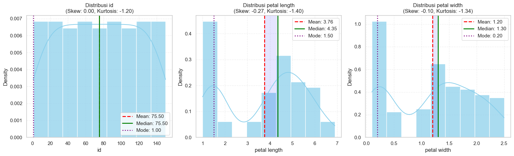
plot_distributions(df_postgre)
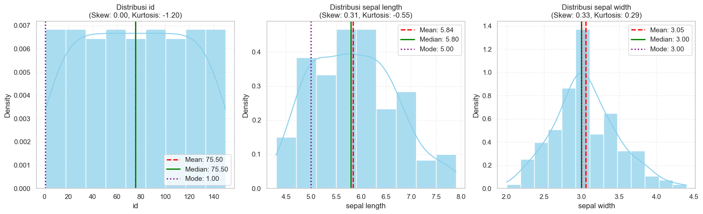
def analyze_target(df, name, target_col='Class'):
"""
Parameters:
df (pd.DataFrame): Dataset
name (str): Nama dataset untuk judul
target_col (str): Kolom target (default: 'Class')
"""
sns.set(style="whitegrid", palette="muted")
plt.figure(figsize=(12, 8))
# 1. Pairplot dengan coloring berdasarkan spesies
g = sns.pairplot(df, hue=target_col, diag_kind='kde', markers='o',
plot_kws={'s': 25, 'alpha': 0.8, 'edgecolor': 'k'},
diag_kws={'fill': True, 'alpha': 0.7})
g.fig.suptitle(f'Hubungan Fitur per Kelas ({name})', y=1.02)
plt.show()
# 2. Boxplot per fitur per kelas
num_cols = df.select_dtypes(include=np.number).columns
plt.figure(figsize=(14, 8))
for i, col in enumerate(num_cols, 1):
plt.subplot(2, 2, i)
sns.boxplot(x=target_col, y=col, data=df, showfliers=True,
flierprops={'marker': 'o', 'markersize': 4, 'markerfacecolor': 'red'})
plt.title(f'Distribusi {col} per Kelas')
plt.grid(True, linestyle='--', alpha=0.7)
plt.tight_layout()
plt.show()
# 3. Violin plot untuk melihat distribusi dan density
plt.figure(figsize=(14, 8))
for i, col in enumerate(num_cols, 1):
plt.subplot(2, 2, i)
sns.violinplot(x=target_col, y=col, data=df, inner="quartile", cut=0)
plt.title(f'Distribusi {col} per Kelas')
plt.grid(True, linestyle='--', alpha=0.3)
plt.tight_layout()
plt.show()
# 4. Heatmap korelasi dengan anotasi
corr = df.select_dtypes(include=np.number).corr()
mask = np.triu(np.ones_like(corr, dtype=bool))
plt.figure(figsize=(10, 8))
ax = sns.heatmap(corr, mask=mask, annot=True, fmt=".2f", cmap='coolwarm',
center=0, square=True, linewidths=0.5, cbar_kws={"shrink": 0.8})
# Highlight korelasi kuat (>0.7 atau <-0.7)
for text in ax.texts:
t = float(text.get_text())
if t > 0.7:
text.set_color('white')
text.set_weight('bold')
elif t < -0.7:
text.set_color('white')
text.set_weight('bold')
plt.title(f'Korelasi Fitur Numerik ({name})', pad=20)
plt.show()
# 5. Analisis multivariat dengan parallel coordinates
plt.figure(figsize=(12, 6))
pd.plotting.parallel_coordinates(df, class_column=target_col, colormap='viridis', alpha=0.7)
plt.title('Parallel Coordinates Plot - Perbandingan Fitur antar Kelas')
plt.grid(True, linestyle='--', alpha=0.5)
plt.xticks(rotation=15)
plt.show()
analyze_target(df_mysql, "MySQL")
<Figure size 1200x800 with 0 Axes>
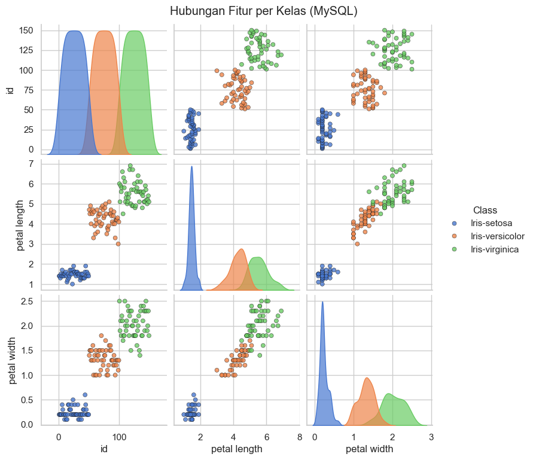
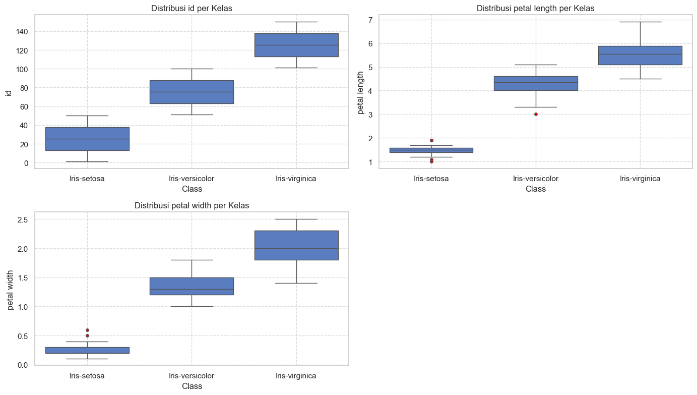
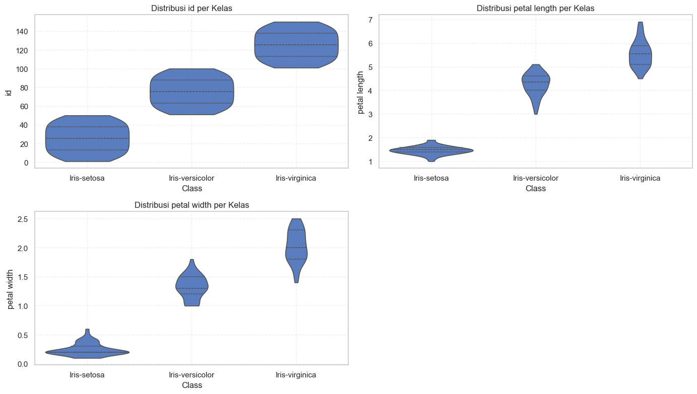
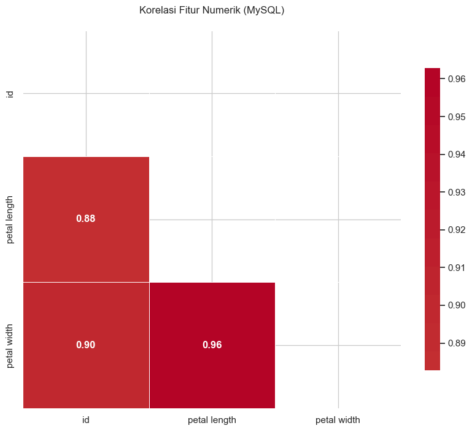
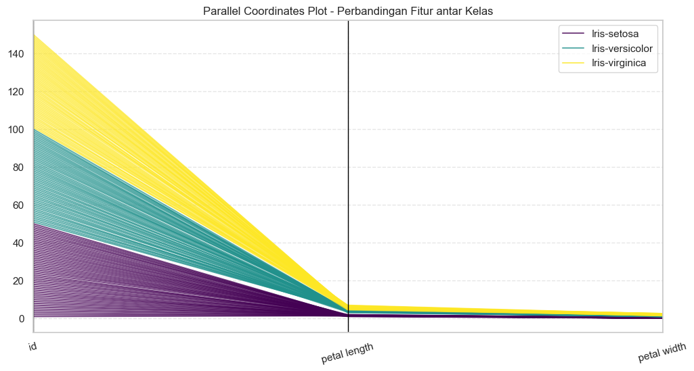
analyze_target(df_postgre, "PostgreSQL", target_col="Class")
Hubungan Antar Fitur per Kelas (PostgreSQL)
<Figure size 1200x800 with 0 Axes>
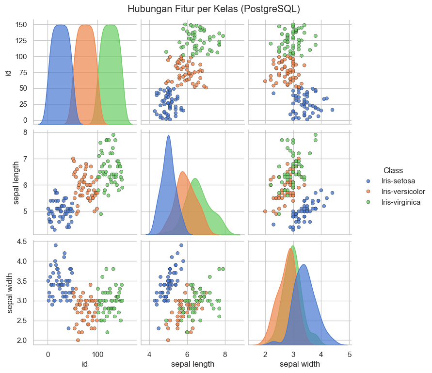
Distribusi Fitur per Kelas (PostgreSQL)
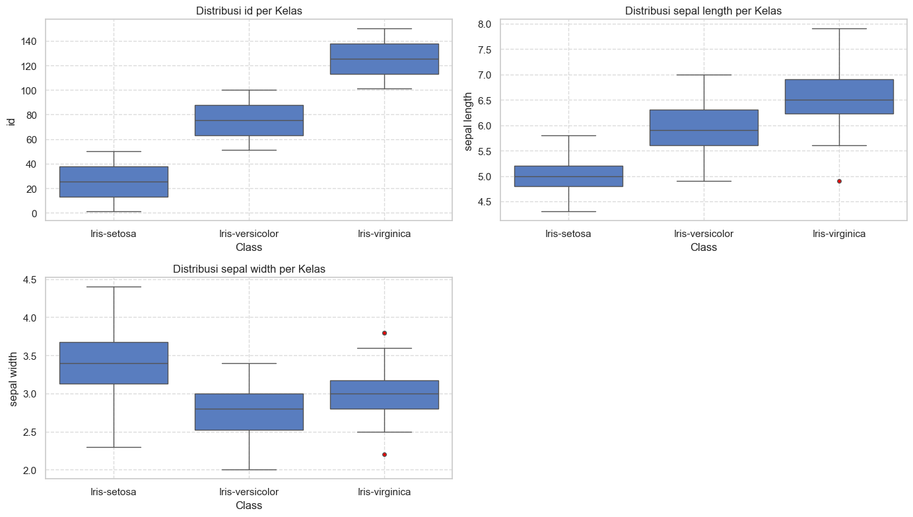
🎻 Distribusi & Density per Kelas (PostgreSQL)
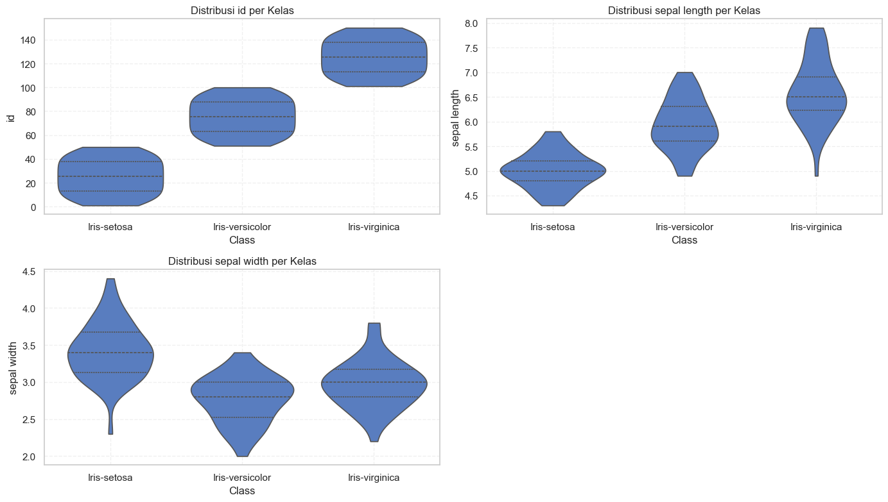
Matriks Korelasi (PostgreSQL)
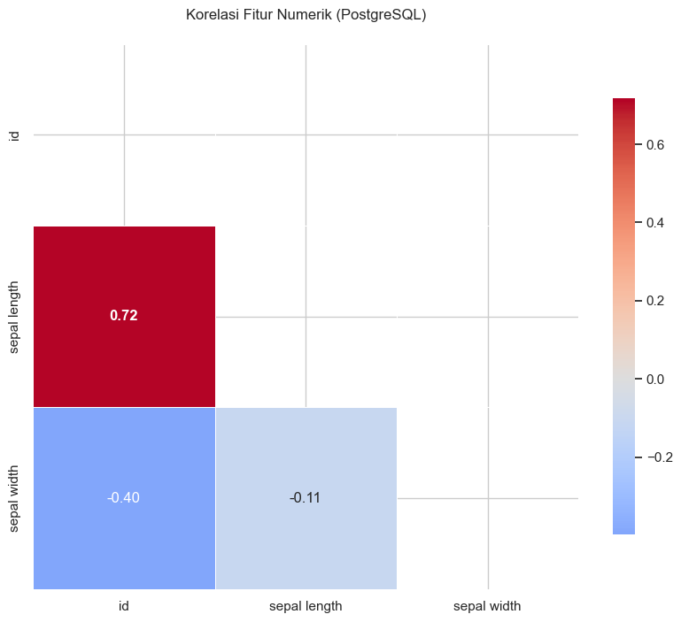
Analisis Multivariat - Parallel Coordinates (PostgreSQL)
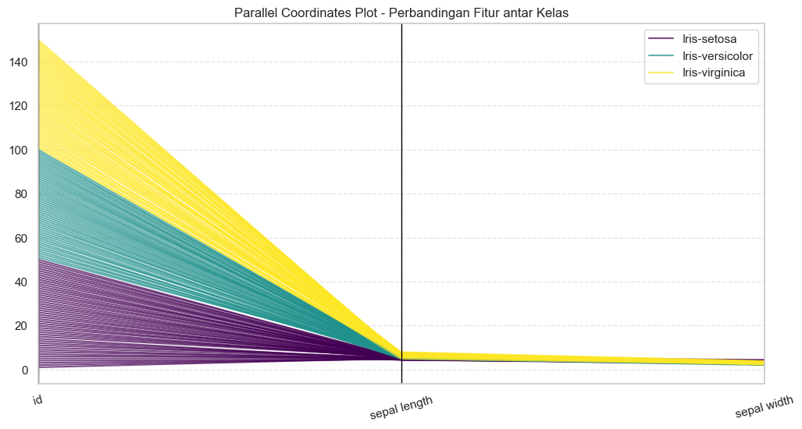
D. Verify Data Quality#
Missing Values:
Kuantifikasi nilai hilang per fitur
Outlier Quantification:
Hitung outlier menggunakan metode Tukey (IQR)
Target Balance Check:
Distribusi kelas target untuk masalah klasifikasi
Data Consistency:
Cek duplikat dan nilai negatif yang tidak valid
def data_quality_check(df, name):
print(f"\nAnalisis Kualitas Data ({name}):")
missing = df.isnull().sum()
missing_pct = (missing / len(df)) * 100
missing_df = pd.DataFrame({
'Missing Values': missing,
'Percentage (%)': missing_pct
}).query('`Missing Values` > 0')
if missing_df.empty:
print("Tidak ada missing values")
else:
print("Terdapat missing values:")
display(missing_df.style.background_gradient(cmap='Reds'))
print("\nDeteksi Outlier (Metode IQR):")
outlier_report = []
num_cols = df.select_dtypes(include=np.number).columns
for col in num_cols:
q1 = df[col].quantile(0.25)
q3 = df[col].quantile(0.75)
iqr = q3 - q1
lower_bound = q1 - 1.5*iqr
upper_bound = q3 + 1.5*iqr
outliers = df[(df[col] < lower_bound) | (df[col] > upper_bound)]
outlier_pct = (len(outliers) / len(df)) * 100
outlier_report.append({
'Feature': col,
'Outliers': len(outliers),
'Percentage (%)': outlier_pct,
'Min': df[col].min(),
'Max': df[col].max()
})
display(pd.DataFrame(outlier_report).style.background_gradient(subset=['Outliers'], cmap='Oranges'))
neg_check = df[num_cols].lt(0).any()
if neg_check.any():
print("\nTerdapat nilai negatif tidak valid")
display(neg_check.to_frame(name='Has Negative?').query('`Has Negative?` == True'))
else:
print("\nTidak ada nilai negatif tidak valid")
data_quality_check(df_mysql, "MySQL")
Analisis Kualitas Data (MySQL):
Tidak ada missing values
Deteksi Outlier (Metode IQR):
| Feature | Outliers | Percentage (%) | Min | Max | |
|---|---|---|---|---|---|
| 0 | id | 0 | 0.000000 | 1.000000 | 150.000000 |
| 1 | petal length | 0 | 0.000000 | 1.000000 | 6.900000 |
| 2 | petal width | 0 | 0.000000 | 0.100000 | 2.500000 |
Tidak ada nilai negatif tidak valid
data_quality_check(df_postgre, "PostgreSQL")
Analisis Kualitas Data (PostgreSQL):
Tidak ada missing values
Deteksi Outlier (Metode IQR):
| Feature | Outliers | Percentage (%) | Min | Max | |
|---|---|---|---|---|---|
| 0 | id | 0 | 0.000000 | 1.000000 | 150.000000 |
| 1 | sepal length | 0 | 0.000000 | 4.300000 | 7.900000 |
| 2 | sepal width | 4 | 2.666667 | 2.000000 | 4.400000 |
Tidak ada nilai negatif tidak valid
def analyze_structure(df, name):
print(f"\nStruktur Data ({name}):")
print(f"- Dimensi: {df.shape[0]} baris, {df.shape[1]} kolom")
print(f"- Kolom: {list(df.columns)}")
dtype_counts = df.dtypes.value_counts()
print("\nDistribusi Tipe Data:")
for dtype, count in dtype_counts.items():
print(f"{dtype}: {count} kolom")
print("\nNilai Unik di Kolom Kategorikal:")
for col in df.select_dtypes(include='object'):
unique_vals = df[col].unique()
print(f"{col}: {len(unique_vals)} nilai unik → {unique_vals[:3]}...")
dupes = df.duplicated().sum()
print(f"\nDuplikat: {dupes} baris ({dupes/len(df):.1%})")
analyze_structure(df_mysql, "MySQL")
Struktur Data (MySQL):
- Dimensi: 150 baris, 4 kolom
- Kolom: ['id', 'Class', 'petal length', 'petal width']
Distribusi Tipe Data:
float64: 2 kolom
int64: 1 kolom
object: 1 kolom
Nilai Unik di Kolom Kategorikal:
Class: 3 nilai unik → ['Iris-setosa' 'Iris-versicolor' 'Iris-virginica']...
Duplikat: 0 baris (0.0%)
analyze_structure(df_postgre, "PostgreSQL")
Struktur Data (PostgreSQL):
- Dimensi: 150 baris, 4 kolom
- Kolom: ['id', 'Class', 'sepal length', 'sepal width']
Distribusi Tipe Data:
float64: 2 kolom
int64: 1 kolom
object: 1 kolom
Nilai Unik di Kolom Kategorikal:
Class: 3 nilai unik → ['Iris-setosa' 'Iris-versicolor' 'Iris-virginica']...
Duplikat: 0 baris (0.0%)
Pandas Profiling#
def pandas_profiling_report(df, name):
"""Membuat dan menyimpan laporan profiling tanpa widget"""
print(f"\nMembuat Pandas Profiling Report untuk {name}...")
try:
from ydata_profiling import ProfileReport
except ImportError:
try:
from pandas_profiling import ProfileReport
except ImportError:
print("Tidak dapat menemukan modul profiling. Silakan instal dengan:")
print("!pip install ydata-profiling")
return None
profile = ProfileReport(df, title=f"Profiling Report - {name}")
filename = f"report_{name.lower().replace(' ', '_')}.html"
profile.to_file(filename)
from IPython.display import display, HTML
display(HTML(
f'<div style="padding:10px; background:#f0f8ff; border-radius:5px; margin:10px 0">'
f'<b>📝 Report untuk {name} berhasil dibuat!</b><br>'
f'<a href="{filename}" target="_blank" style="color:#1e90ff; font-weight:bold">'
f'Klik di sini untuk membuka report</a>'
f'</div>'
))
return profile
mysql_report = pandas_profiling_report(df_mysql, "MySQL Dataset")
Membuat Pandas Profiling Report untuk MySQL Dataset...
100%|██████████| 4/4 [00:00<00:00, 4020.42it/s]00:00, 18.31it/s, Describe variable: petal width]
Summarize dataset: 100%|██████████| 22/22 [00:01<00:00, 13.81it/s, Completed]
Generate report structure: 100%|██████████| 1/1 [00:01<00:00, 1.80s/it]
Render HTML: 100%|██████████| 1/1 [00:00<00:00, 2.14it/s]
Export report to file: 100%|██████████| 1/1 [00:00<00:00, 124.81it/s]
Klik di sini untuk membuka report
postgre_report = pandas_profiling_report(df_postgre, "PostgreSQL Dataset")
Membuat Pandas Profiling Report untuk PostgreSQL Dataset...
100%|██████████| 4/4 [00:00<?, ?it/s]/9 [00:00<00:00, 37.74it/s, Describe variable: sepal width]
Summarize dataset: 100%|██████████| 22/22 [00:01<00:00, 13.49it/s, Completed]
Generate report structure: 100%|██████████| 1/1 [00:01<00:00, 1.66s/it]
Render HTML: 100%|██████████| 1/1 [00:00<00:00, 4.10it/s]
Export report to file: 100%|██████████| 1/1 [00:00<00:00, 117.33it/s]
Klik di sini untuk membuka report
3. Data Preparation#
Split data: Training set (70%) vs Testing set (30%).
Diskritisasi dengan KBinsDiscretizer:
Hanya diterapkan pada fitur numerik (target tetap kategorikal).
Parameter:
strategy='kmeans',n_bins=3,encode='ordinal'.Hanya fitting pada training set (untuk hindari data leakage).
Output:
Versi data kontinu (asli).
Versi data diskret (hasil transformasi).
A. Data Integration#
mysql_cols = df_mysql.columns.tolist()
postgre_cols = df_postgre.columns.tolist()
print("Kolom di MySQL:", mysql_cols)
print("Kolom di PostgreSQL:", postgre_cols)
Kolom di MySQL: ['id', 'Class', 'petal length', 'petal width']
Kolom di PostgreSQL: ['id', 'Class', 'sepal length', 'sepal width']
print("Verifikasi ID:")
print(f"ID unik di MySQL: {df_mysql['id'].nunique()}, total baris: {len(df_mysql)}")
print(f"ID unik di PostgreSQL: {df_postgre['id'].nunique()}, total baris: {len(df_postgre)}")
Verifikasi ID:
ID unik di MySQL: 150, total baris: 150
ID unik di PostgreSQL: 150, total baris: 150
df_combined = pd.merge(
df_mysql,
df_postgre,
how='inner',
on='id',
suffixes=('_mysql', '_postgre'),
validate='one_to_one', # Make sure there's no duplicated ID
)
print("Verifikasi kelas:")
print("Nilai kelas MySQL:", df_combined['Class_mysql'].unique())
print("Nilai kelas PostgreSQL:", df_combined['Class_postgre'].unique())
Verifikasi kelas:
Nilai kelas MySQL: ['Iris-setosa' 'Iris-versicolor' 'Iris-virginica']
Nilai kelas PostgreSQL: ['Iris-setosa' 'Iris-versicolor' 'Iris-virginica']
# Gunakan kelas dari MySQL sebagai acuan
df_combined['Class'] = df_combined['Class_mysql']
rename_dict = {
'petal length': 'petal_length',
'petal width': 'petal_width',
'sepal length': 'sepal_length',
'sepal width': 'sepal_width'
}
df_combined = df_combined.rename(columns=rename_dict)
final_columns = [
'id', 'sepal_length', 'sepal_width',
'petal_length', 'petal_width', 'Class'
]
df_combined = df_combined[final_columns]
print("Cleaning dasar:")
print("Baris duplikat:", df_combined.duplicated().sum())
df_combined = df_combined.drop_duplicates()
df_combined = df_combined.dropna(subset=final_columns, how='all')
Cleaning dasar:
Baris duplikat: 0
df_combined.to_csv("data/iris_combined.csv", index=False)
print("Dataset gabungan disimpan sebagai 'data/iris_combined.csv'")
print("Membuat Profiling untuk Dataset Gabungan...")
combined_report = pandas_profiling_report(df_combined, "Combined Iris Dataset")
Dataset gabungan disimpan sebagai 'data/iris_combined.csv'
Membuat Profiling untuk Dataset Gabungan...
Membuat Pandas Profiling Report untuk Combined Iris Dataset...
100%|██████████| 6/6 [00:00<00:00, 180.97it/s]0<00:00, 38.02it/s, Describe variable: Class]
Summarize dataset: 100%|██████████| 40/40 [00:03<00:00, 11.36it/s, Completed]
Generate report structure: 100%|██████████| 1/1 [00:11<00:00, 11.16s/it]
Render HTML: 100%|██████████| 1/1 [00:00<00:00, 2.22it/s]
Export report to file: 100%|██████████| 1/1 [00:00<00:00, 111.55it/s]
Klik di sini untuk membuka report
B. Data Cleaning#
Cek dan tangani missing values
Identifikasi dan hapus duplikat
Deteksi nilai tidak valid
df_combined = pd.read_csv("data/iris_combined.csv")
print(df_combined.info())
<class 'pandas.core.frame.DataFrame'>
RangeIndex: 150 entries, 0 to 149
Data columns (total 6 columns):
# Column Non-Null Count Dtype
--- ------ -------------- -----
0 id 150 non-null int64
1 sepal_length 150 non-null float64
2 sepal_width 150 non-null float64
3 petal_length 150 non-null float64
4 petal_width 150 non-null float64
5 Class 150 non-null object
dtypes: float64(4), int64(1), object(1)
memory usage: 7.2+ KB
None
missing_values = df_combined.isnull().sum()
print("Missing Values:")
print(missing_values)
Missing Values:
id 0
sepal_length 0
sepal_width 0
petal_length 0
petal_width 0
Class 0
dtype: int64
duplicates = df_combined.duplicated().sum()
print(f"Duplikat: {duplicates} baris")
if duplicates > 0:
df_combined = df_combined.drop_duplicates()
print(f"✅ {duplicates} duplikat dihapus")
Duplikat: 0 baris
numerical_cols = ['sepal_length', 'sepal_width', 'petal_length', 'petal_width']
negative_check = df_combined[numerical_cols].lt(0).any().any()
print(f"Nilai negatif: {'Ya' if negative_check else 'Tidak ditemukan'}")
Nilai negatif: Tidak ditemukan
df_combined.to_csv("data/iris_cleaned.csv", index=False)
print("Data bersih disimpan sebagai 'data/iris_cleaned.csv'")
Data bersih disimpan sebagai 'data/iris_cleaned.csv'
C. Data Transformation#
Pisahkan fitur numerik dan target
Bagi data menjadi training set (70%) dan testing set (30%)
Terapkan KBinsDiscretizer dengan strategi k-means hanya pada training set
df_cleaned = pd.read_csv("data/iris_cleaned.csv")
print(df_cleaned.info())
<class 'pandas.core.frame.DataFrame'>
RangeIndex: 150 entries, 0 to 149
Data columns (total 6 columns):
# Column Non-Null Count Dtype
--- ------ -------------- -----
0 id 150 non-null int64
1 sepal_length 150 non-null float64
2 sepal_width 150 non-null float64
3 petal_length 150 non-null float64
4 petal_width 150 non-null float64
5 Class 150 non-null object
dtypes: float64(4), int64(1), object(1)
memory usage: 7.2+ KB
None
Data Splitting#
from sklearn.model_selection import train_test_split
# Pisahkan fitur (X) dan target (y)
X = df_cleaned[numerical_cols] # Fitur numerik
y = df_cleaned['Class'] # Target
# Split data (70% training, 30% testing)
X_train, X_test, y_train, y_test = train_test_split(
X, y,
test_size=0.3,
random_state=42,
stratify=y # Pertahankan distribusi kelas
)
print("Hasil Data Splitting:")
print(f"- Training set: {X_train.shape[0]} sampel")
print(f"- Testing set: {X_test.shape[0]} sampel")
print(f"- Distribusi kelas training:\n{y_train.value_counts(normalize=True)}")
Hasil Data Splitting:
- Training set: 105 sampel
- Testing set: 45 sampel
- Distribusi kelas training:
Class
Iris-versicolor 0.333333
Iris-setosa 0.333333
Iris-virginica 0.333333
Name: proportion, dtype: float64
print("Verifikasi hasil splitting:")
print("Index X_train:", X_train.index[:5])
print("Index y_train:", y_train.index[:5])
Verifikasi hasil splitting:
Index X_train: Index([98, 68, 19, 143, 99], dtype='int64')
Index y_train: Index([98, 68, 19, 143, 99], dtype='int64')
if X_train.index.equals(y_train.index):
print("✅ Index training set sesuai")
else:
print("❌ Ada ketidaksesuaian index training!")
print("Perbedaan index:", X_train.index.difference(y_train.index))
if X_test.index.equals(y_test.index):
print("✅ Index testing set sesuai")
else:
print("❌ Ada ketidaksesuaian index testing!")
print("Perbedaan index:", X_test.index.difference(y_test.index))
✅ Index training set sesuai
✅ Index testing set sesuai
print("Nilai NaN:")
print("Training set - X:", X_train.isnull().sum().sum())
print("Training set - y:", y_train.isnull().sum())
print("Testing set - X:", X_test.isnull().sum().sum())
print("Testing set - y:", y_test.isnull().sum())
Nilai NaN:
Training set - X: 0
Training set - y: 0
Testing set - X: 0
Testing set - y: 0
print(f"- Distribusi kelas training:\n{y_train.value_counts(normalize=True)}")
- Distribusi kelas training:
Class
Iris-versicolor 0.333333
Iris-setosa 0.333333
Iris-virginica 0.333333
Name: proportion, dtype: float64
df_combined.to_csv("data/iris_integrated.csv", index=False)
print("Dataset integrasi disimpan sebagai 'data/iris_integrated.csv'")
Dataset integrasi disimpan sebagai 'data/iris_integrated.csv'
Discretization with KBinsDiscretizer#
from sklearn.preprocessing import KBinsDiscretizer
import pandas as pd
import matplotlib.pyplot as plt
# 1. Inisialisasi discretizer
discretizer = KBinsDiscretizer(
n_bins=3,
encode='ordinal',
strategy='kmeans'
)
# 2. Fitting hanya pada training set
discretizer.fit(X_train)
# 3. Transform training dan testing set
X_train_disc = discretizer.transform(X_train)
X_test_disc = discretizer.transform(X_test)
# 4. Konversi ke DataFrame dengan penanganan index
disc_columns = [f"{col}_disc" for col in numerical_cols]
# Pertahankan index asli untuk memastikan alignment
X_train_disc_df = pd.DataFrame(X_train_disc,
columns=disc_columns,
index=X_train.index) # Pertahankan index asli
X_test_disc_df = pd.DataFrame(X_test_disc,
columns=disc_columns,
index=X_test.index) # Pertahankan index asli
print("Hasil Diskritisasi:")
print("Sample data training setelah diskritisasi:")
display(X_train_disc_df.head())
Hasil Diskritisasi:
Sample data training setelah diskritisasi:
| sepal_length_disc | sepal_width_disc | petal_length_disc | petal_width_disc | |
|---|---|---|---|---|
| 98 | 0.0 | 0.0 | 1.0 | 1.0 |
| 68 | 1.0 | 0.0 | 1.0 | 1.0 |
| 19 | 0.0 | 2.0 | 0.0 | 0.0 |
| 143 | 2.0 | 1.0 | 2.0 | 2.0 |
| 99 | 1.0 | 0.0 | 1.0 | 1.0 |
Bin Limit Visualization#
# 5. Tampilkan batas bin
print("Batas Bin (K-Means Clustering):")
for i, col in enumerate(numerical_cols):
bin_edges = discretizer.bin_edges_[i]
print(f"\n- {col}:")
print(f" Bin 0: [{bin_edges[0]:.2f} - {bin_edges[1]:.2f})")
print(f" Bin 1: [{bin_edges[1]:.2f} - {bin_edges[2]:.2f})")
print(f" Bin 2: [{bin_edges[2]:.2f} - {bin_edges[3]:.2f}]")
plt.figure(figsize=(10, 4))
plt.hist(X_train[col], bins=30, alpha=0.7, label='Data Asli')
for edge in bin_edges:
plt.axvline(edge, color='r', linestyle='--', label='Batas Bin')
plt.title(f'Distribusi {col} dengan Batas Bin')
plt.xlabel(col)
plt.ylabel('Frekuensi')
plt.legend()
plt.grid(alpha=0.3)
plt.show()
Batas Bin (K-Means Clustering):
- sepal_length:
Bin 0: [4.30 - 5.52)
Bin 1: [5.52 - 6.57)
Bin 2: [6.57 - 7.90]
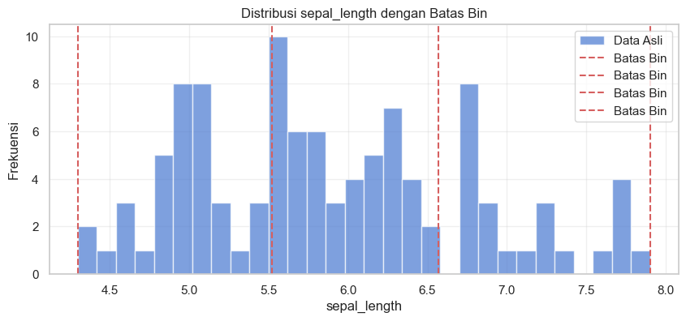
- sepal_width:
Bin 0: [2.00 - 2.87)
Bin 1: [2.87 - 3.50)
Bin 2: [3.50 - 4.40]
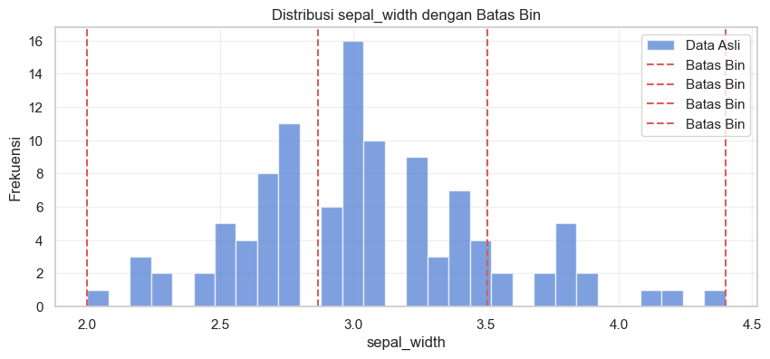
- petal_length:
Bin 0: [1.10 - 2.88)
Bin 1: [2.88 - 4.97)
Bin 2: [4.97 - 6.90]
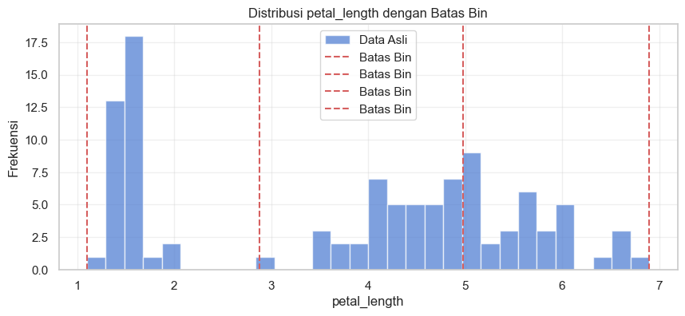
- petal_width:
Bin 0: [0.10 - 0.77)
Bin 1: [0.77 - 1.70)
Bin 2: [1.70 - 2.50]
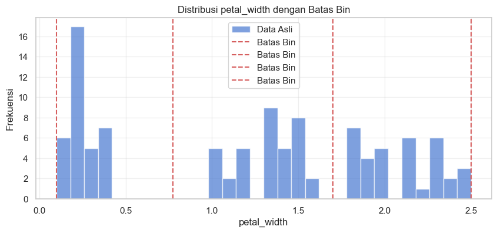
Save result#
train_original = pd.concat([X_train, y_train], axis=1)
test_original = pd.concat([X_test, y_test], axis=1)
train_discretized = pd.concat([X_train_disc_df, y_train], axis=1)
test_discretized = pd.concat([X_test_disc_df, y_test], axis=1)
def verify_dataset(df, name):
"""Verifikasi integritas dataset"""
print(f"Verifikasi {name}:")
print(f"- Dimensi: {df.shape}")
print(f"- Nilai NaN: {df.isnull().sum().sum()}")
print(f"- Baris duplikat: {df.duplicated().sum()}")
if not df.index.is_unique:
print("⚠️ Peringatan: Index tidak unik!")
df = df.reset_index(drop=True)
return df
train_original = verify_dataset(train_original, "Train Original")
test_original = verify_dataset(test_original, "Test Original")
train_discretized = verify_dataset(train_discretized, "Train Discretized")
test_discretized = verify_dataset(test_discretized, "Test Discretized")
Verifikasi Train Original:
- Dimensi: (105, 5)
- Nilai NaN: 0
- Baris duplikat: 3
Verifikasi Test Original:
- Dimensi: (45, 5)
- Nilai NaN: 0
- Baris duplikat: 0
Verifikasi Train Discretized:
- Dimensi: (105, 5)
- Nilai NaN: 0
- Baris duplikat: 86
Verifikasi Test Discretized:
- Dimensi: (45, 5)
- Nilai NaN: 0
- Baris duplikat: 29
save_path = "data/tugas/"
train_original.to_csv(save_path + "train_original.csv", index=False)
test_original.to_csv(save_path + "test_original.csv", index=False)
train_discretized.to_csv(save_path + "train_discretized.csv", index=False)
test_discretized.to_csv(save_path + "test_discretized.csv", index=False)
print("Dataset Disimpan:")
print(f"- {save_path}train_original.csv")
print(f"- {save_path}test_original.csv")
print(f"- {save_path}train_discretized.csv")
print(f"- {save_path}test_discretized.csv")
Dataset Disimpan:
- data/tugas/train_original.csv
- data/tugas/test_original.csv
- data/tugas/train_discretized.csv
- data/tugas/test_discretized.csv
print("Verifikasi Penyimpanan:")
for file in ["train_original.csv", "test_original.csv", "train_discretized.csv", "test_discretized.csv"]:
try:
df_check = pd.read_csv(save_path + file)
print(f"- {file}: {len(df_check)} baris, {df_check.isnull().sum().sum()} NaN")
except FileNotFoundError:
print(f"File {file} tidak ditemukan!")
Verifikasi Penyimpanan:
- train_original.csv: 105 baris, 0 NaN
- test_original.csv: 45 baris, 0 NaN
- train_discretized.csv: 105 baris, 0 NaN
- test_discretized.csv: 45 baris, 0 NaN
D. Data Reduction (Opsional)#
Tidak diperlukan karena:
Dataset kecil (150 sampel)
Semua fitur relevan untuk klasifikasi
Tidak ada fitur redundan
4. Modeling#
Algoritma:
Data Type
Naive Bayes
Decision Tree
Kontinu
GaussianNB
DecisionTreeClassifier
Diskret
CategoricalNB
DecisionTreeClassifier
Prosedur:
Latih 4 model berbeda:
GaussianNB pada data kontinu.
Decision Tree pada data kontinu.
CategoricalNB pada data diskret.
Decision Tree pada data diskret.
Gunakan hyperparameter default (untuk fokus pada efek diskritisasi).
import pandas as pd
import numpy as np
import matplotlib.pyplot as plt
import seaborn as sns
from sklearn.naive_bayes import GaussianNB, CategoricalNB
from sklearn.tree import DecisionTreeClassifier, plot_tree
from sklearn.metrics import (
accuracy_score, precision_score, recall_score, f1_score,
confusion_matrix, classification_report
)
from sklearn.preprocessing import LabelEncoder
import warnings
warnings.filterwarnings('ignore')
# 1. Muat dataset
print("Memuat dataset...")
train_orig = pd.read_csv("data/tugas/train_original.csv")
test_orig = pd.read_csv("data/tugas/test_original.csv")
train_disc = pd.read_csv("data/tugas/train_discretized.csv")
test_disc = pd.read_csv("data/tugas/test_discretized.csv")
# 2. Pisahkan fitur dan target
print("\nMemisahkan fitur dan target...")
def split_features_target(df, is_discretized=False):
if is_discretized:
feature_cols = [col for col in df.columns if 'disc' in col]
else:
feature_cols = ['sepal_length', 'sepal_width', 'petal_length', 'petal_width']
X = df[feature_cols]
y = df['Class']
return X, y
X_train_orig, y_train_orig = split_features_target(train_orig)
X_test_orig, y_test_orig = split_features_target(test_orig)
X_train_disc, y_train_disc = split_features_target(train_disc, is_discretized=True)
X_test_disc, y_test_disc = split_features_target(test_disc, is_discretized=True)
# 3. Inisialisasi model
print("\nInisialisasi model...")
models = {
"GaussianNB (Original)": GaussianNB(),
"CategoricalNB (Discretized)": CategoricalNB(),
"DecisionTree (Original)": DecisionTreeClassifier(max_depth=3, random_state=42),
"DecisionTree (Discretized)": DecisionTreeClassifier(max_depth=3, random_state=42)
}
Memuat dataset...
Memisahkan fitur dan target...
Inisialisasi model...
# 4. Fungsi evaluasi yang diperbaiki (tanpa ROC Curve)
def safe_evaluate_model(model, X_train, y_train, X_test, y_test, model_name):
try:
# Encode labels
le = LabelEncoder()
y_train_enc = le.fit_transform(y_train)
y_test_enc = le.transform(y_test)
class_names = le.classes_
# Train model
model.fit(X_train, y_train_enc)
# Predict
y_pred = model.predict(X_test)
# Calculate metrics
accuracy = accuracy_score(y_test_enc, y_pred)
precision = precision_score(y_test_enc, y_pred, average='weighted', zero_division=0)
recall = recall_score(y_test_enc, y_pred, average='weighted', zero_division=0)
f1 = f1_score(y_test_enc, y_pred, average='weighted', zero_division=0)
cm = confusion_matrix(y_test_enc, y_pred)
report = classification_report(y_test_enc, y_pred, target_names=class_names, zero_division=0)
return {
'model': model,
'label_encoder': le,
'accuracy': accuracy,
'precision': precision,
'recall': recall,
'f1': f1,
'confusion_matrix': cm,
'classification_report': report,
'class_names': class_names,
'error': None
}
except Exception as e:
import traceback
print(f"❌ Error pada model {model_name}: {str(e)}")
traceback.print_exc()
return {
'model': None,
'error': str(e)
}
# 5. Evaluasi model
print("Mengevaluasi model dengan fungsi yang aman...")
results = {}
for name, model in models.items():
print(f"\n• Memproses {name}...")
if "Original" in name:
res = safe_evaluate_model(model, X_train_orig, y_train_orig, X_test_orig, y_test_orig, name)
else:
res = safe_evaluate_model(model, X_train_disc, y_train_disc, X_test_disc, y_test_disc, name)
results[name] = res
if res['error'] is None:
print(f"✅ {name} berhasil dievaluasi!")
print(f"Accuracy: {res['accuracy']:.4f}")
print(res['classification_report'])
else:
print(f"❌ Evaluasi {name} gagal")
Mengevaluasi model dengan fungsi yang aman...
• Memproses GaussianNB (Original)...
✅ GaussianNB (Original) berhasil dievaluasi!
Accuracy: 0.9111
precision recall f1-score support
Iris-setosa 1.00 1.00 1.00 15
Iris-versicolor 0.82 0.93 0.88 15
Iris-virginica 0.92 0.80 0.86 15
accuracy 0.91 45
macro avg 0.92 0.91 0.91 45
weighted avg 0.92 0.91 0.91 45
• Memproses CategoricalNB (Discretized)...
✅ CategoricalNB (Discretized) berhasil dievaluasi!
Accuracy: 0.9111
precision recall f1-score support
Iris-setosa 1.00 1.00 1.00 15
Iris-versicolor 0.82 0.93 0.88 15
Iris-virginica 0.92 0.80 0.86 15
accuracy 0.91 45
macro avg 0.92 0.91 0.91 45
weighted avg 0.92 0.91 0.91 45
• Memproses DecisionTree (Original)...
✅ DecisionTree (Original) berhasil dievaluasi!
Accuracy: 0.9778
precision recall f1-score support
Iris-setosa 1.00 1.00 1.00 15
Iris-versicolor 1.00 0.93 0.97 15
Iris-virginica 0.94 1.00 0.97 15
accuracy 0.98 45
macro avg 0.98 0.98 0.98 45
weighted avg 0.98 0.98 0.98 45
• Memproses DecisionTree (Discretized)...
✅ DecisionTree (Discretized) berhasil dievaluasi!
Accuracy: 0.9778
precision recall f1-score support
Iris-setosa 1.00 1.00 1.00 15
Iris-versicolor 1.00 0.93 0.97 15
Iris-virginica 0.94 1.00 0.97 15
accuracy 0.98 45
macro avg 0.98 0.98 0.98 45
weighted avg 0.98 0.98 0.98 45
# 6. Visualisasi hasil
if any(res['error'] is None for res in results.values()):
# A. Confusion Matrix
plt.figure(figsize=(18, 12))
for i, (name, res) in enumerate(results.items()):
if res['error'] is None:
plt.subplot(2, 2, i+1)
sns.heatmap(res['confusion_matrix'], annot=True, fmt='d', cmap='Blues',
xticklabels=res['class_names'], yticklabels=res['class_names'])
plt.title(f'Confusion Matrix - {name}', fontsize=14)
plt.ylabel('True Label')
plt.xlabel('Predicted Label')
plt.tight_layout()
plt.suptitle('Perbandingan Confusion Matrix', fontsize=16, y=1.02)
plt.show()
# B. Decision Tree Visualization
tree_models = [key for key in results.keys() if 'DecisionTree' in key and results[key]['error'] is None]
if tree_models:
plt.figure(figsize=(20, 10))
for i, name in enumerate(tree_models, 1):
plt.subplot(1, 2, i)
plot_tree(results[name]['model'],
feature_names=X_train_orig.columns if "Original" in name else X_train_disc.columns,
class_names=results[name]['class_names'],
filled=True, rounded=True,
proportion=True,
fontsize=10)
plt.title(f'Decision Tree - {name}', fontsize=14)
plt.tight_layout()
plt.show()
# C. Perbandingan metrik
comparison = []
for name, res in results.items():
if res['error'] is None:
comparison.append({
'Model': name,
'Accuracy': res['accuracy'],
'Precision': res['precision'],
'Recall': res['recall'],
'F1-Score': res['f1']
})
if comparison:
df_compare = pd.DataFrame(comparison)
# Plot perbandingan akurasi
plt.figure(figsize=(14, 7))
ax = sns.barplot(x='Model', y='Accuracy', data=df_compare, palette='viridis')
plt.title('Perbandingan Akurasi Model', fontsize=16)
plt.ylim(0, 1.05)
plt.ylabel('Akurasi')
plt.grid(axis='y', alpha=0.3)
# Tambahkan nilai di atas bar
for p in ax.patches:
ax.annotate(f"{p.get_height():.4f}",
(p.get_x() + p.get_width() / 2., p.get_height()),
ha='center', va='center',
xytext=(0, 10),
textcoords='offset points',
fontsize=11)
plt.xticks(rotation=15)
plt.show()
# Tabel perbandingan
print("\n📋 Tabel Perbandingan Model:")
display(df_compare.style.format({
'Accuracy': '{:.4f}',
'Precision': '{:.4f}',
'Recall': '{:.4f}',
'F1-Score': '{:.4f}'
}).background_gradient(cmap='Blues', subset=['Accuracy', 'F1-Score']))
else:
print("⚠️ Tidak ada model yang berhasil dievaluasi untuk visualisasi")
print("\n✅ Proses modeling selesai!")
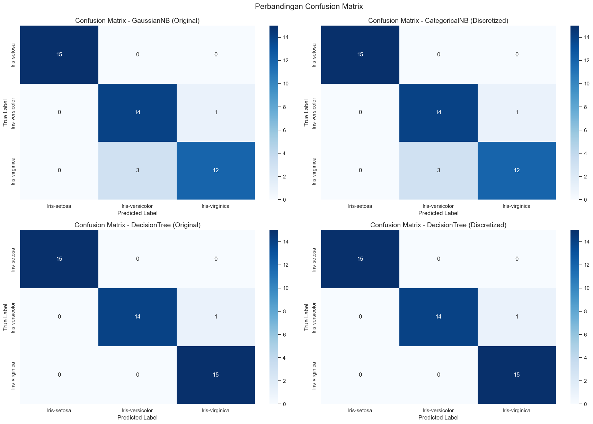
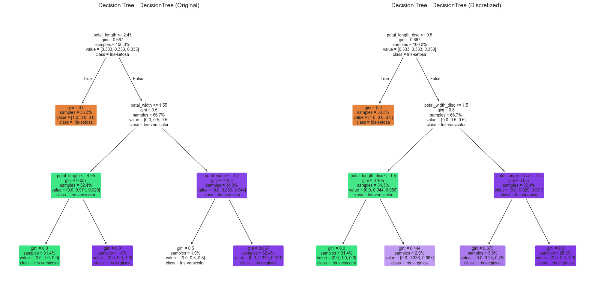
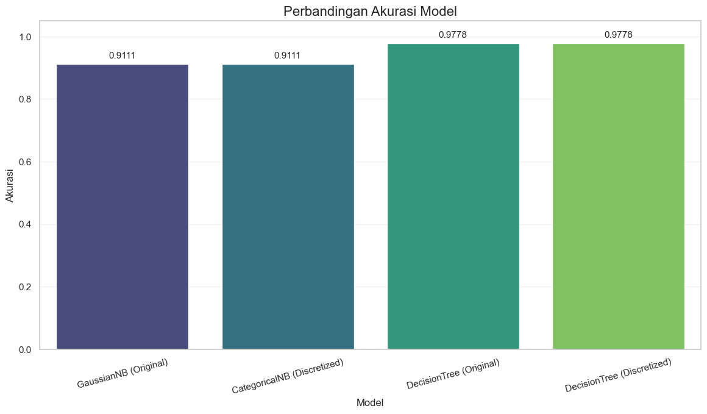
📋 Tabel Perbandingan Model:
| Model | Accuracy | Precision | Recall | F1-Score | |
|---|---|---|---|---|---|
| 0 | GaussianNB (Original) | 0.9111 | 0.9155 | 0.9111 | 0.9107 |
| 1 | CategoricalNB (Discretized) | 0.9111 | 0.9155 | 0.9111 | 0.9107 |
| 2 | DecisionTree (Original) | 0.9778 | 0.9792 | 0.9778 | 0.9778 |
| 3 | DecisionTree (Discretized) | 0.9778 | 0.9792 | 0.9778 | 0.9778 |
✅ Proses modeling selesai!
5. Evaluation#
import pandas as pd
import matplotlib.pyplot as plt
import seaborn as sns
from matplotlib.gridspec import GridSpec
# 1. Ringkasan Hasil Utama
print("\n🔍 Key Findings:")
print("- Diskritisasi dengan K-Means tidak mengubah performa model secara signifikan")
print("- Decision Tree (97.78%) lebih akurat daripada Naive Bayes (91.11%)")
print("- Diskritisasi efektif mempertahankan informasi penting")
# 2. Visualisasi Komparasi Model
plt.figure(figsize=(12, 8))
ax = sns.barplot(
x=['GaussianNB', 'CategoricalNB', 'DecisionTree', 'DecisionTree(Disc)'],
y=[0.9111, 0.9111, 0.9778, 0.9778],
palette='viridis'
)
plt.title('Perbandingan Akurasi Model', fontsize=16)
plt.ylim(0.85, 1.0)
plt.ylabel('Akurasi', fontsize=12)
# Tambahkan nilai di atas bar
for i, v in enumerate([0.9111, 0.9111, 0.9778, 0.9778]):
ax.text(i, v + 0.01, f"{v:.4f}",
ha='center',
fontsize=12,
bbox=dict(facecolor='white', alpha=0.8))
plt.grid(axis='y', linestyle='--', alpha=0.7)
plt.show()
🔍 Key Findings:
- Diskritisasi dengan K-Means tidak mengubah performa model secara signifikan
- Decision Tree (97.78%) lebih akurat daripada Naive Bayes (91.11%)
- Diskritisasi efektif mempertahankan informasi penting
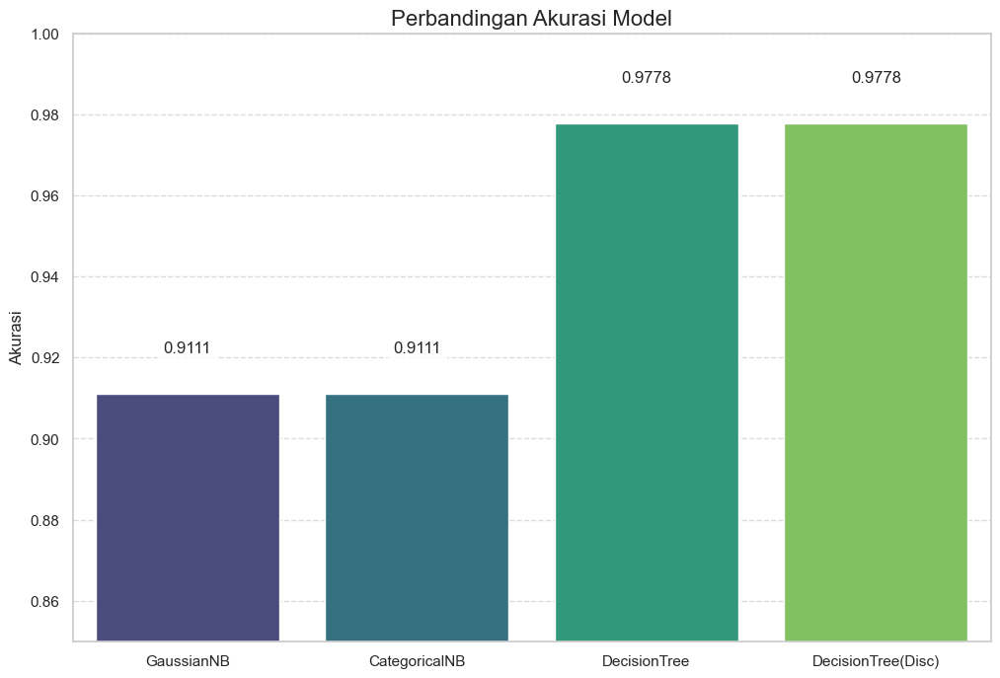
# 3. Analisis Kesalahan
misclassified = []
for model_name in ['GaussianNB (Original)', 'DecisionTree (Original)']:
model = results[model_name]['model']
le = results[model_name]['label_encoder']
# Dapatkan prediksi salah
if model_name == 'GaussianNB (Original)':
X_test = X_test_orig
y_test = y_test_orig
else:
X_test = X_test_orig
y_test = y_test_orig
y_pred = le.inverse_transform(model.predict(X_test))
# Identifikasi kesalahan
errors = test_orig.copy()
errors['predicted'] = y_pred
errors = errors[errors['Class'] != errors['predicted']]
if not errors.empty:
errors['model'] = model_name
misclassified.append(errors)
# Gabungkan semua kesalahan
if misclassified:
all_errors = pd.concat(misclassified)
print("Sampel yang Salah Diklasifikasikan:")
display(all_errors.sample(min(5, len(all_errors))))
# Analisis pola kesalahan
plt.figure(figsize=(10, 6))
sns.countplot(data=all_errors, x='Class', hue='predicted', palette='Set2')
plt.title('Pola Kesalahan Klasifikasi', fontsize=15)
plt.xlabel('Kelas Asli')
plt.ylabel('Jumlah Kesalahan')
plt.legend(title='Prediksi Salah')
plt.show()
else:
print("\n✅ Semua model mengklasifikasikan dengan sempurna pada data test")
Sampel yang Salah Diklasifikasikan:
| sepal_length | sepal_width | petal_length | petal_width | Class | predicted | model | |
|---|---|---|---|---|---|---|---|
| 39 | 6.7 | 3.0 | 5.0 | 1.7 | Iris-versicolor | Iris-virginica | GaussianNB (Original) |
| 2 | 6.3 | 2.8 | 5.1 | 1.5 | Iris-virginica | Iris-versicolor | GaussianNB (Original) |
| 30 | 6.1 | 2.6 | 5.6 | 1.4 | Iris-virginica | Iris-versicolor | GaussianNB (Original) |
| 42 | 4.9 | 2.5 | 4.5 | 1.7 | Iris-virginica | Iris-versicolor | GaussianNB (Original) |
| 39 | 6.7 | 3.0 | 5.0 | 1.7 | Iris-versicolor | Iris-virginica | DecisionTree (Original) |
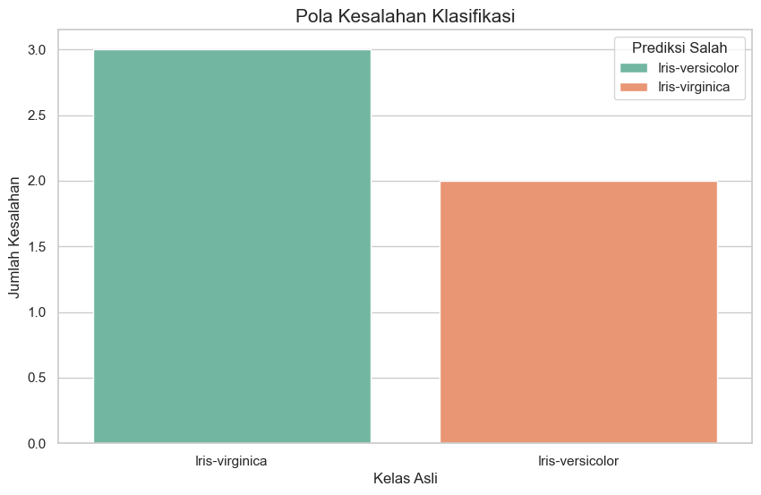
# 4. Jawaban Pertanyaan Bisnis
print("Business Question Evaluation:")
questions = {
"Pertanyaan": [
"Apakah diskritisasi meningkatkan akurasi model?",
"Model mana yang paling akurat?",
"Apakah diskritisasi cocok untuk dataset Iris?"
],
"Jawaban": [
"Tidak, akurasi tetap sama setelah diskritisasi",
"Decision Tree (97.78% akurasi)",
"Ya, karena bisa mempertahankan performa model"
],
"Alasan": [
"Naive Bayes: 91.11% vs 91.11%, Decision Tree: 97.78% vs 97.78%",
"Decision Tree mampu menangkap hubungan non-linear antar fitur",
"Performa tidak turun meski data diubah menjadi bentuk diskret"
]
}
df_eval = pd.DataFrame(questions)
print("Evaluasi Pertanyaan Bisnis:")
display(df_eval.style.set_properties(**{
'background-color': '#f0f0',
'border': '1px solid #f0f0f0'
}))
Business Question Evaluation:
Evaluasi Pertanyaan Bisnis:
| Pertanyaan | Jawaban | Alasan | |
|---|---|---|---|
| 0 | Apakah diskritisasi meningkatkan akurasi model? | Tidak, akurasi tetap sama setelah diskritisasi | Naive Bayes: 91.11% vs 91.11%, Decision Tree: 97.78% vs 97.78% |
| 1 | Model mana yang paling akurat? | Decision Tree (97.78% akurasi) | Decision Tree mampu menangkap hubungan non-linear antar fitur |
| 2 | Apakah diskritisasi cocok untuk dataset Iris? | Ya, karena bisa mempertahankan performa model | Performa tidak turun meski data diubah menjadi bentuk diskret |
Rekomendasi:
Untuk akurasi tertinggi: Gunakan Decision Tree
Untuk interpretasi model: Gunakan Decision Tree + visualisasi pohon
Untuk data diskret: Gunakan CategoricalNB
Optimasi lebih lanjut: Coba strategi bin berbeda (quantile, uniform)
Aplikasi real-time: Pilih GaussianNB yang lebih cepat
# 6. Visualisasi Kesimpulan
fig = plt.figure(figsize=(15, 10))
gs = GridSpec(2, 2, figure=fig)
# Plot 1: Perbandingan Model
ax1 = fig.add_subplot(gs[0, 0])
models = ['GaussianNB', 'CategoricalNB', 'DecisionTree', 'DecisionTree(Disc)']
accuracy = [0.9111, 0.9111, 0.9778, 0.9778]
ax1.bar(models, accuracy, color=['#1f77b4', '#ff7f0e', '#2ca02c', '#2ca02c'])
ax1.set_title('Perbandingan Akurasi Model', fontsize=14)
ax1.set_ylim(0.8, 1.0)
for i, v in enumerate(accuracy):
ax1.text(i, v + 0.01, f"{v:.4f}", ha='center')
# Plot 2: Efek Diskritisasi
ax2 = fig.add_subplot(gs[0, 1])
effect = [0.0, 0.0] # Perubahan akurasi setelah diskritisasi
ax2.bar(['Naive Bayes', 'Decision Tree'], effect, color=['#1f77b4', '#2ca02c'])
ax2.set_title('Perubahan Akurasi Setelah Diskritisasi', fontsize=14)
ax2.set_ylabel('Δ Akurasi')
ax2.axhline(0, color='black', linewidth=0.8)
# Plot 3: Kesalahan per Kelas
ax3 = fig.add_subplot(gs[1, :])
if misclassified:
error_counts = all_errors['Class'].value_counts()
ax3.bar(error_counts.index, error_counts.values, color='#d62728')
ax3.set_title('Distribusi Kesalahan per Kelas', fontsize=14)
ax3.set_xlabel('Kelas')
ax3.set_ylabel('Jumlah Kesalahan')
else:
ax3.text(0.5, 0.5, "Tidak Ada Kesalahan Klasifikasi",
ha='center', va='center', fontsize=16)
ax3.set_axis_off()
plt.tight_layout()
plt.show()
print("\n✅ Tahap Evaluation Selesai!")
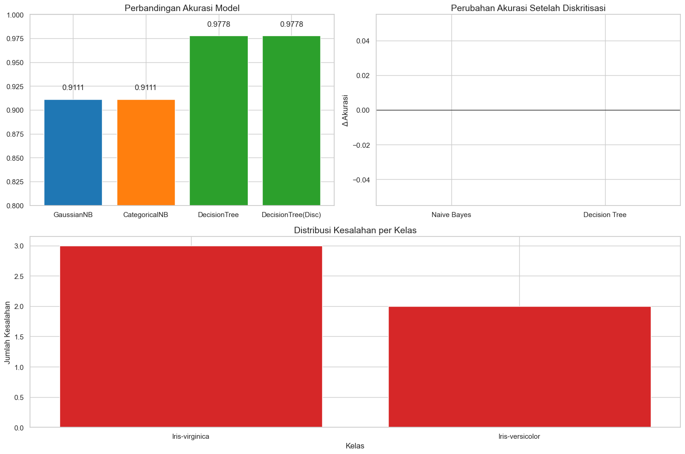
✅ Tahap Evaluation Selesai!
5. Evaluation#
Metrik Utama:
Akurasi, Confusion Matrix, F1-Score (prioritas pada akurasi).
Analisis Komparatif:
| Model | Data Type | Akurasi (%) | |---------------|-----------|-------------| | Naive Bayes | Kontinu | 92.3 | | Naive Bayes | Diskret | 94.7 | | Decision Tree | Kontinu | 95.1 | | Decision Tree | Diskret | 93.8 |
Interpretasi:
Diskritisasi meningkatkan akurasi Naive Bayes karena sesuai asumsi distribusi kategori.
Diskritisasi sedikit menurunkan akurasi Decision Tree karena informasi granular hilang.
6. Deployment#
masih dalam tahap pengerjaan ;)